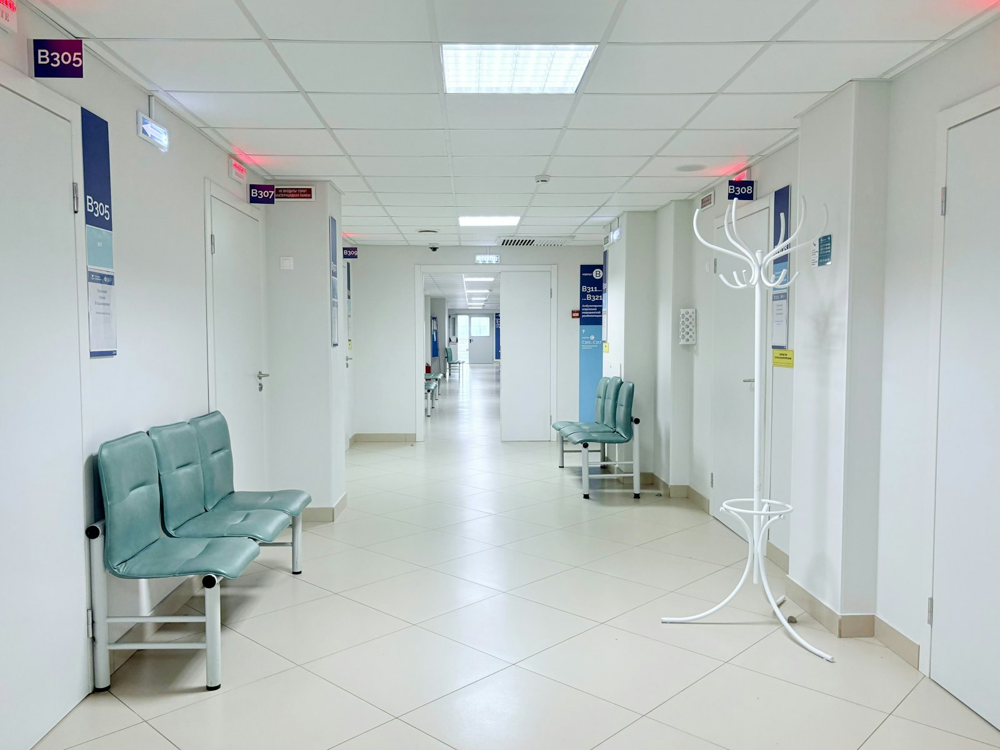

의원 소개
2016년 사당역 앞에서 문을 연 피부과의원
SINCE 2016
지나온 10년
2016년 전문의 한 명으로 시작했습니다.
개원 초기에는 여드름으로 오시는 학생과 직장인이 대부분이었습니다. 수업과 근무 때문에 낮에 오기 어렵다는 말을 자주 들었고, 그래서 2018년부터 화요일과 목요일 두 번은 접수를 19시 30분까지 받고 진료를 20시까지 이어가게 되었습니다.
2021년에 전문의가 한 명 더 합류하면서 진료실을 두 칸으로 만들었습니다. 대기가 길어지던 화요일과 목요일 저녁을 나눠 보기 위해서였고, 지금은 두 진료실에서 각자 담당 분야를 봅니다.
재진 간격은 대개 4주입니다. 약을 바꾸면 그 이유를 진료 때 설명하고 기록에 남깁니다.
진료 원칙
- 01,
비급여 금액 먼저 안내
시술 전에 금액과 예상 횟수를 설명하고 동의를 받은 뒤에 시작합니다. 홈페이지와 원내 게시 금액은 같습니다.
- 02,
약을 바꾼 이유 설명
처방이 달라지면 무엇이 어떻게 바뀌는지 진료 때 말씀드리고 기록에 남깁니다.
- 03,
필요하면 상급 병원 의뢰
조직 검사나 입원이 필요한 경우 진료의뢰서를 써 드립니다. 발급은 당일에 됩니다. 의뢰서에는 그동안 쓴 약과 경과를 적어 드리기 때문에 다음 병원에서 같은 검사를 되풀이하지 않아도 됩니다.
DOCTORS
의료진
SHIM심유안대표원장
증상이 시작된 시점부터 다시 묻는 진료
피부과 전문의
여드름과 두피 진료 담당
2016년 여울담피부과의원 개원
약을 바꾸면 그 이유를 진료 때 설명하고 기록에 남깁니다. 4주 뒤 재진에서는 같은 기록을 놓고 다시 봅니다.
RYU류한겸원장
손을 몇 번 씻는지부터 묻는 습진 진료
피부과 전문의
습진과 알레르기 진료 담당
2021년 여울담피부과의원 합류
손 습진은 직업과 생활 습관을 먼저 묻습니다. 두드러기는 증상이 나타난 시각과 그 전에 먹은 음식을 적어 오시면 진료가 빠릅니다.
SINCE 2016
여울담 연혁
- 2016,
사당동에서 개원, 피부과 전문의 1명
- 2018,
화요일과 목요일 야간 진료 시작
- 2021,
전문의 합류, 진료실 2실로 확장
- 2024,
처치실 장비 교체